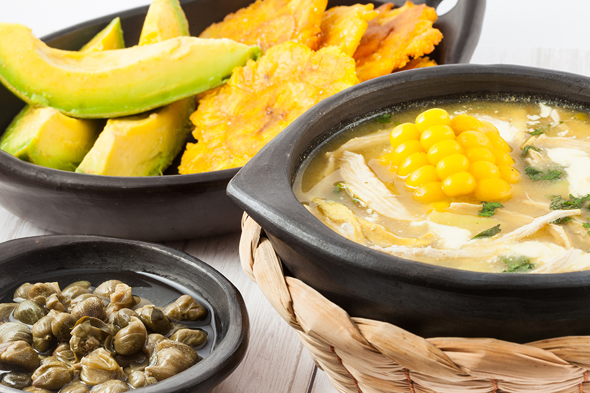
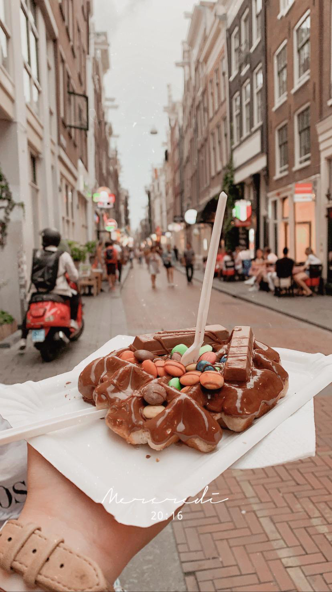
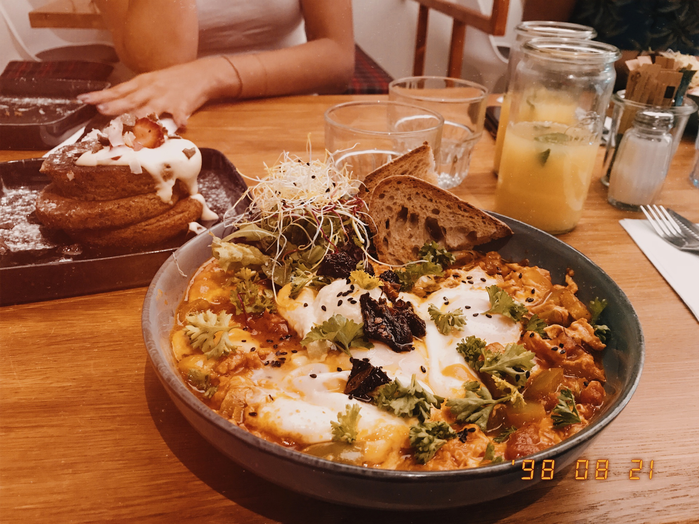

A delicious Paella Valenciana.

Some great Tapas in Sevilla.

One of some tradicional breakfast in Colombia: eggs, envuelto de maís (kind of a wrapped corn), arepa de choclo (sweet corn arepa with cheese) and coffee.
Ajiaco is a tradicional soup in Colombia base made with three kind of potatoes, chicken, corn and a species called Guascas. On top you add avocado, cream, capers and ají (a spicy condiment).

La Bandeja Paisa is a tradicional plate from the region of Antioquia where the city of Medellin is located. It contains rice, egg, red beans, avocado, meat, arepa and plantain banana.

The best Asian food I have eaten in a restaurant named Rokko in Bogota.
Some pear with Speculoos biscuit made as a crumble and vanilla ice cream.

Some waffles made in the form of an ice cream dipped in different kind of chocolate sauces and some toppings.

Potatoe with fried Camembert cheese and nuts on top.

Cooked apple dipped in chocolate with vanilla ice cream inside covered by crumble on top.

Eggplant gratin with Parmesan cheese on top.

Salad with dried tomatoes, Mozzarella di Bufala and pesto.

Pesto pasta with Pine nuts and Mozzarella di Bufala.

Delicious sushi.
A mix of different tradicional food from Amsterdam.
Belgian waffle with Nutella and some M&M's and KitKat toppings.
Omelette with Ratatouille and dried tomatoes. On the left, some vegan pancakes with some Crème Glacée.
Lángos is a tradicional plate from Hungary, also found is Austria, Germany, Rumania and Slovakia. It is a fried potatoe dough with any kind of toppings (cream, cheese, tomatoes, pesto, bacon...).